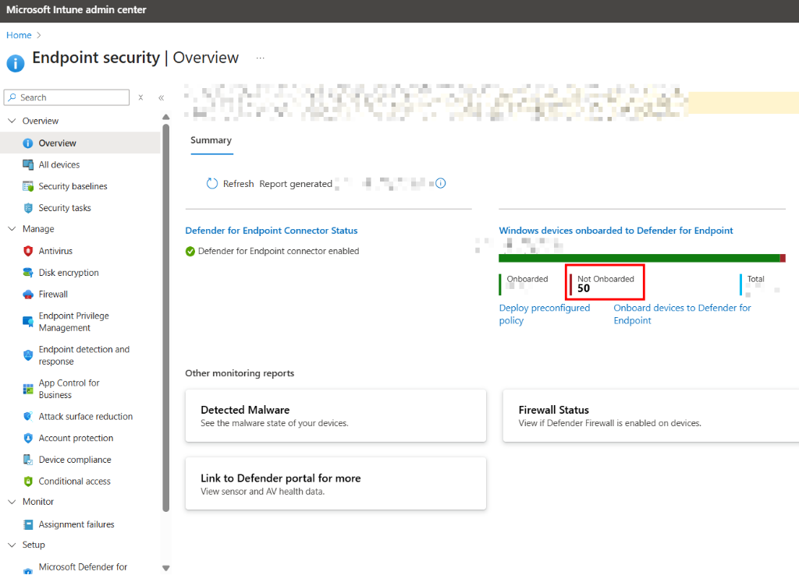
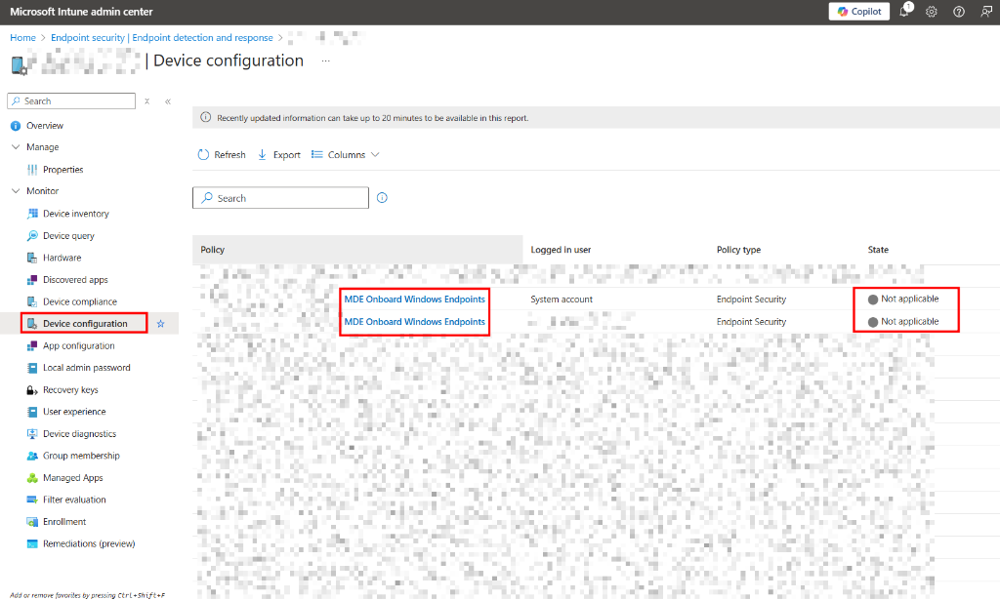
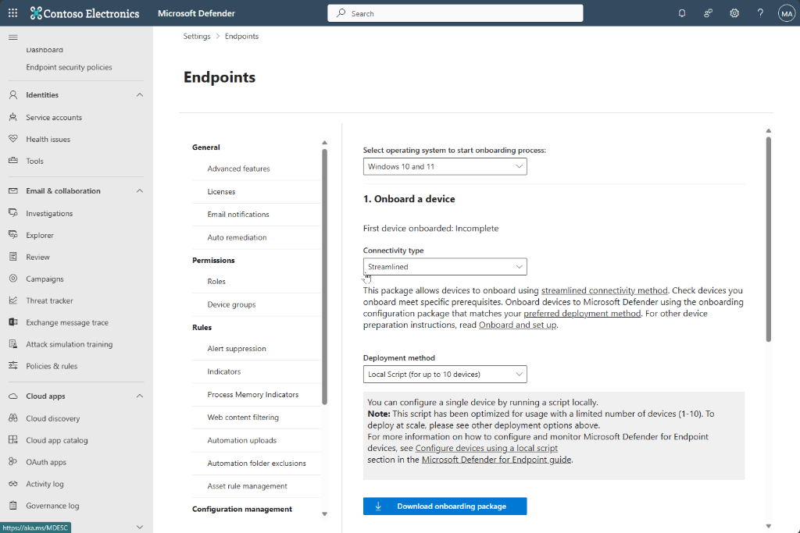

If you're deploying Microsoft Defender for Endpoint (MDE) to Windows 11 devices using Intune, you might have hit a frustrating wall. Some devices stubbornly refuse to onboard, showing up as "Not applicable" in your device configuration profiles. It's a ghost in the machine that leaves your endpoints vulnerable.
The Symptom
You might first notice this in the Endpoint security | Overview dashboard, where a chunk of your devices are listed as "Not Onboarded".
Digging deeper into the Device configuration status, you see the dreaded grey status: "Not applicable".
The Resolution
After some investigation, I found that this specific issue on Windows 11 often relates to a missing Windows capability. The fix involves two main steps:
- Adding the specific Windows Capability for the Sense Client.
- Re-initiating the onboarding script.
We can automate this entire fix using an Intune Proactive Remediation script.
Step 1: The Missing Capability
The core of the fix is running this DISM command to add the Sense Client capability:
DISM /online /Add-Capability /CapabilityName:Microsoft.Windows.Sense.Client~~~~
Step 2: The Proactive Remediation Script
To deploy this at scale, I've created a Detection and Remediation script pair. This will automatically identify affected devices and apply the fix.
Detection Script
This script checks if the MDE service is running and if the registry keys are correctly populated.
# Custom PS Script: Detection Script for MDE_OnboardingFix
# Bassem Louati
$null = Start-Transcript -Path "${env:ProgramData}\Microsoft\IntuneManagementExtension\Logs\MDE_OnboardingFix_DetectionScript.log" -Append -Force
$exitCode = 0
$registryPath = "HKLM:\SOFTWARE\Policies\Microsoft\Windows Advanced Threat Protection"
$registryValueName = "OnboardingInfo"
function Check-RegistryValue {
if (Test-Path $registryPath) {
if (Get-ItemProperty -Path $registryPath -Name $registryValueName -ErrorAction Ignore) {
if (Get-ItemPropertyValue -Path $registryPath -Name $registryValueName -ErrorAction Ignore) {
Write-Host "The registry value exists."
return $true
}
}
else {
Write-Warning "The registry value name does not exist."
return $false
}
}
else {
Write-Warning "The path to this value does not exist."
return $false
}
}
function Check-ATPProcess {
$WindowsDefenderATPExecutable = Get-Process -Name MsSense -ErrorAction SilentlyContinue
if ($WindowsDefenderATPExecutable -eq $Null) {
Write-Warning "Process is not running"
return $false
}
else {
Write-Host "Process is running"
return $true
}
}
$registryCheck = Check-RegistryValue
$processCheck = Check-ATPProcess
if ($registryCheck -and $processCheck) {
Write-Host "Both checks passed."
$exitCode = 0
}
else {
Write-Warning "One or both checks failed: RegistryCheck: $registryCheck | ProcessCheck: $processCheck"
$exitCode = 1
}
$null = Stop-Transcript
exit $exitCodeRemediation Script
The remediation script installs the missing capability and then re-runs the local onboarding script. Important: You must download your specific onboarding package from the Microsoft Defender portal and insert the content where indicated.
Go to security.microsoft.com > Settings > Endpoints > Onboarding, select "Windows 10 and 11", and download the "Local Script".
# Custom PS Script: Remediation Script for MDE_OnboardingFix
# Bassem Louati
$logPath = "${env:ProgramData}\Microsoft\IntuneManagementExtension\Logs\MDE_OnboardingFix_RemediationScript.log"
$null = Start-Transcript -Path $logPath -Append -Force
# Check if the capability exists
$capabilityName = "Microsoft.Windows.Sense.Client~~~~"
$capability = Get-WindowsCapability -Online | Where-Object { $_.Name -eq $capabilityName }
if ($capability) {
Write-Host "Capability found: $($capability.Name)" -ForegroundColor Green
Write-Host "State: $($capability.State)" -ForegroundColor Yellow
# Check if it's already installed
if ($capability.State -eq "Installed") {
Write-Host "The capability is already installed." -ForegroundColor Cyan
}
else {
Write-Host "Installing capability..." -ForegroundColor Yellow
DISM /online /Add-Capability /CapabilityName:$capabilityName
}
}
else {
Write-Host "Capability '$capabilityName' not found in available capabilities." -ForegroundColor Red
}
# NOTE: Insert your MDE onboarding script content below
$cmdScript = @"
REM Paste the content of your .cmd file downloaded from security.microsoft.com here
REM This section will execute the MDE onboarding commands
"@
# Create temp file
$tempFile = [System.IO.Path]::GetTempFileName()
Rename-Item $tempFile "$tempFile.cmd"
$tempFile = "$tempFile.cmd"
# Write script to file
$cmdScript | Out-File -FilePath $tempFile -Encoding ASCII
# Execute the script
cmd /c $tempFile
# Clean up
Remove-Item $tempFile
$null = Stop-Transcript
exit 0By deploying this proactive remediation, you ensure that any Windows 11 device missing the Sense Client capability gets fixed automatically, bringing those "Not Applicable" devices back into the fold.